25 Bacterias y arqueas
517
CONCEPTOS CLAVE
25.1 Las bacterias y arqueas son organismos unicelulares que, en contraste con las células eucariotas, no tienen organelos encerrados por membranas; la mayoría tienen una pared celular que rodea la membrana plasmática y tienen una sola molécula circular de ADN. 25.2 La evolución ocurre rápidamente en procariotas; la selección natural actúa sobre la variación genética ocasionada por mutaciones y recombinación genética, y es facilitada por la reproducción rápida. 25.3 La gran diversidad ha evolucionado en su metabolismo y modo de nutrición permitiendo a los procariotas proliferar en todo tipo de hábitats. 25.4 Los procariotas constituyen dos de los tres dominios: Bacteria y Archaea. 25.5 Los procariotas desempeñan importantes papeles en la ecología, el comercio y la tecnología. 25.6 Las muchas adaptaciones que evolucionaron en las bacterias patógenas contribuyen a su gran éxito.
E
n este capítulo examinará la diversidad y características de bacterias y arqueas, dos de las tres ramas principales del árbol de la vida. Estos organismos, llamados de manera informal procariotas, habitan el planeta desde hace más de 3500 millones de años, mucho más tiempo que los eucariotas, que evolucionaron hace más o menos 2200 millones de años. Aunque los procariotas son microscópicos, son tan numerosos que, junto con los hongos, representan aproximadamente la mitad de la biomasa de la Tierra, la masa de material vivo. En contraste, las plantas representan alrededor de 35% y los animales 15% de la biomasa del planeta. El microscopista holandés Anton van Leeuwenhoek descubrió las bacterias y otros microorganismos en 1674, cuando observó una gota de agua de un lago a través de una lente de vidrio. Durante la parte fi nal del siglo xix, muchos microorganismos, incluidos algunas bacterias, hongos y protozoarios, se identifi caron como patógenos , agentes que causan enfermedades (vea la fotografía). Las bacterias causan muchas enfermedades, por ejemplo: tuberculosis, tétanos, infecciones respiratorias e intoxicaciones alimenticias en humanos. No obstante, sólo una pequeña minoría de las especies bacteriales es patógena. De hecho, las bacterias desempeñan papeles esenciales en la biosfera. Como desintegradores,
Micrografía coloreada obtenida con un microscopio electrónico de transmisión de una bacteria ( Streptococcus pyogenes ) dividida por fi sión binaria. Esta bacteria, un patógeno que habita en la nariz y garganta de los humanos, puede causar escarlatina e infl amación del tejido cardiaco. La cepa que se muestra aquí es resistente a los antibióticos y la infección puede ser mortal.
K. Lounatmaa/Photo Researchers, Inc.
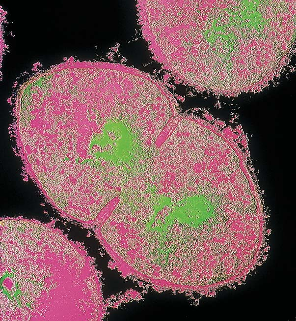
518 Capítulo 25
descomponen moléculas orgánicas en sus componentes. Junto con los hongos, los procariotas son los recicladores líderes de la naturaleza. Sin estos microorganismos, elementos como carbono, nitrógeno, fósforo y azufre permanecerían encerrados en los desechos y cuerpos muertos de plantas, animales y otros organismos, y no estarían disponibles para la síntesis de nuevas células y organismos. Algunos procariotas son productores que realizan fotosíntesis. Otros convierten el nitrógeno atmosférico en amoniaco y luego en nitratos, formas que utilizan las plantas (vea la fi gura 55-8). Esta conversión permite que plantas y animales (porque ellos comen plantas) fabriquen compuestos nitrogenados esenciales, como proteínas y ácidos nucleicos. Este capítulo comienza con una descripción de la estructura de bacterias y arqueas, y luego describe la fi logenia de los dos dominios procariotas. Se presenta un panorama del impacto de los procariotas sobre la ecología, la tecnología y el comercio, y termina con una discusión de las bacterias y las enfermedades.
25.1 LA ESTRUCTURA DE BACTERIAS Y ARQUEAS
OBJETIVOS DE APRENDIZAJE
1 Describir la estructura y formas comunes de las células procariotas. 2 Contrastar la pared celular bacterial en bacterias grampositivas y gramnegativas. 3 Describir el movimiento en procariotas y describir la estructura del fl agelo bacterial.
En contraste con los virus, viroides y priones, que sólo consisten de ácidos nucleicos y/o proteína, los procariotas son organismos celulares. (Recuerde de los capítulos 4 y 23 que la estructura celular de los procariotas es diferente en lo fundamental de las células eucariotas de otros organismos vivientes). Los microbiólogos asignan los procariotas a dos dominios: Archaea y Bacteria.
La mayoría de las células procariotas son muy pequeñas. Por lo general, su diámetro varía de 0.5 a 1.0 m m, y su longitud de 1.0 a 5.0 m m. Su volumen celular es de sólo aproximadamente una milésima de la que tienen las células eucariotas pequeñas y su longitud sólo es de alrededor de una décima. La mayoría de los procariotas son unicelulares, pero algunos forman colonias o fi lamentos que contienen células especializadas.
Los procariotas tienen varias formas comunes
Dos formas procariotas básicas son esférica y de bastón. Los procariotas esféricos, conocidos como cocos , existen solos en algunas especies y en grupos de células independientes en otras ( FIGURA 25-1a ). Las células pueden agruparse en pares ( diplococos ), en cadenas largas ( estreptococos ) o en cúmulos irregulares que parecen racimos de uvas ( estafi lococos ). Los procariotas con forma de bastón, llamados bacilos , pueden ocurrir como bastones individuales o como largas cadenas de bastones ( FIGURA 25-1b ). Algunos procariotas forman espirales. Si la célula con forma de espiral es fl exible, es una espiroqueta ; si es rígida, es un espirilo ( FIGURA 25-1c ). Un espirilo con forma de coma se llama vibrio . Algunas arqueas tienen formas inusuales, como células triangulares o cuadradas.
Las células procariotas no tienen organelos encerrados en membranas
En contraste con las células eucariotas, las células procariotas no tienen núcleo u otros organelos encerrados en una membrana ( FIGURA 25-2 ; vea el capítulo 4). Aunque la célula procariota no tiene núcleo encerrado en una membrana, tiene un área nuclear, también conocida como nucleoide , que contiene ADN. El denso citoplasma de la célula procariota contiene ribosomas (más pequeños que los contenidos en las células eucariotas) y gránulos de almacenamiento que retienen glucógeno, lípido y compuestos de fosfato. Las enzimas necesarias para las actividades metabólicas pueden localizarse en el citoplasma. Aunque los organelos membranosos de las células están ausentes, en algunas células procariotas la membrana plas-
© Dennis Kunkel Microscopy/Visuals Unlimited, Inc.
0.6 μ m
- Bacterias cocos. Micrografía coloreada obtenida con un microscopio electrónico de barrido (MEB) de Staphylococcus aureus . Estas bacterias producen infecciones y lesiones en la piel, intoxicaciones por alimentos y síndrome del shock tóxico.
© Dr. Gary Gaugler/Photo Researchers, Inc.
3 μ m
- Bacterias bacilos. Micrografía MEB coloreada de Salmonella . Estos bacilos causan intoxicación por alimentos.
Center for Disease Control
12 μ m
- Bacterias espiroquetas. Micrografía MEB coloreada de Borrelia burgdorferi . Estas espiroquetas causan la enfermedad de Lyme, que es transmitida por garrapatas de ciervo infectadas.
FIGURA 25-1 Formas comunes de procariotas
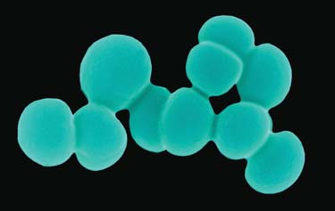
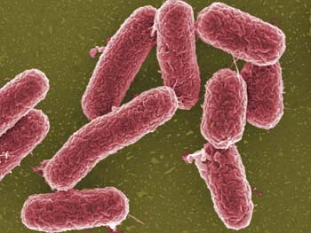
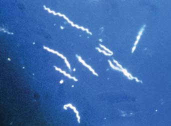
Bacterias y arqueas 519
En la pared celular de la arquea está ausente el peptidoglicano. Las diferencias en la composición de la pared celular bacterial son de gran interés para los microbiólogos y tienen importancia clínica. En 1888 el médico da nés Christian Gram desarrolló el procedimiento de teñido de Gram. Las bacterias que absorben y retienen en el laboratorio el tinte violeta cristal se conocen como gram positivas , mientras las que no retienen el tinte cuando se enjuagan con alcohol son gramnegativas . Las paredes celulares de las bacterias grampositivas son muy gruesas y consisten principalmente de pep tidoglicano. Las paredes celulares de las bacterias gramnegativas tienen dos capas: una delgada de peptidoglicano y una gruesa membrana exterior. La membrana exterior se parece a la membrana plasmática pero contiene polisacáridos enlazados a lípidos ( FIGURA 25-3 ). Distinguir entre bacterias grampositivas y gramnegativas es importante en el tratamiento de ciertas enfermedades. Por ejemplo, el antibiótico penicilina interfi ere con la síntesis de peptidoglicano, lo que a fi nal de cuentas resulta en una pared celular frágil que no puede proteger a la célula (vea la discusión del capítulo 7 acerca de los medicamentos inhibidores de enzimas). Es predecible que la penicilina funcione de manera más efectiva contra bacterias gramnegativas.
Algunas bacterias producen cápsulas o capas mucilaginosas
Muchas especies procariotas producen una cápsula o capa mucilaginosa que rodea la pared celular. Una capa mucilaginosa está unida más débilmente a la pared celular que una cápsula. Dichas capas mucilaginosas están hechas de polisacárido o proteína. En las especies de vida libre, la cobertura exterior puede brindar a la célula protección adicional contra fagocitosis (engullimiento; vea el capítulo 5) por otros microorganismos. En las bacterias patógenas, una cápsula o capa mucilaginosa puede proteger contra fagocitosis por parte de los leucocitos del huésped. La capacidad del Streptococcus pneumoniae para provocar neumonía bacteriana depende de su cápsula. Una cepa de S. pneumoniae que carezca de cápsula no produce la enfermedad. Las bacterias también usan sus cápsulas para fi jarse a superfi cies como roca, raíces vegetales o dientes humanos (donde producen placa dental).
Algunos procariotas tienen fi mbrias o pelos
Algunos procariotas tienen cientos de apéndices con forma de cabello llamados fi mbrias . Las fi mbrias, que están hechas de proteína, son más cortas que los fl agelos. Los pelos por lo general son más largos que las fi mbrias. Por lo general existen menos pelos que fi mbrias sobre la superfi cie celular. Las bacterias usan fi mbrias y pelos para fi jarse a superfi cies celulares, incluidas las superfi cies de las células que infectan. Estas es-
mática está extensamente plegada hacia adentro. Las enzimas necesarias para la respiración celular y la fotosíntesis pueden estar asociadas con la membrana plasmática o sus pliegues.
Una pared celular protege a la mayoría de los procariotas
La mayoría de las células procariotas tienen una pared celular que rodea la membrana plasmática. La pared celular brinda un rígido armazón que sostiene la célula y mantiene su forma. Las paredes bacteriales tienen una alta concentración de solutos disueltos. La pared celular evita que la célula explote en condiciones hipotónicas (vea el capítulo 5). Por ende, la mayoría de las bacterias están adaptadas a ambientes hipotónicos. Cuando experimentalmente se producen formas de bacterias sin paredes, deben mantenerse en soluciones isotónicas para evitar que exploten. Sin embargo, las paredes celulares son de poca ayuda cuando una bacteria está en un ambiente hipertónico, como en la comida conservada mediante un alto contenido de azúcar o sal. Por esta razón, la mayoría de las bacterias crecen pobremente en mermeladas, jamones, pescado salado y otros alimentos conservados en esta forma. La pared celular bacterial incluye peptidoglicano , un complejo polímero que consiste de dos tipos inusuales de azúcares (amino azúcar) ligada con polipéptidos cortos. Los azúcares y polipéptidos se unen para formar una sola macromolécula que rodea toda la membrana plasmática.
En contraste con las células eucariotas, las células procariotas no tienen núcleo u otros organelos encerrados por membrana. Por lo general tienen un área nuclear con una sola molécula circular de ADN.
Fimbria (estructura utilizada para la fijación)
Gránulo de almacenamiento
Flagelo Ribosomas
Cromosoma bacterial (ADN)
Pared celular
Membrana exterior
Capa de peptidoglicano
Cápsula
Membrana plasmática
Plásmido (ADN)
Área nuclear (nucleoide)
FIGURA 25-2 Animada Estructura de una célula procariota Este bacilo es una bacteria gramnegativa (consulte el texto). Observe la ausencia de una envoltura nuclear que rodee al ADN bacterial.
PUNTO CLAVE
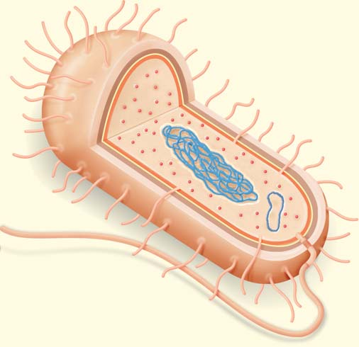
520 Capítulo 25
algunos tipos de bacterias se vuelven dominantes. La célula pierde agua, se encoge ligeramente y permanece inactiva hasta que el agua está disponible de nuevo. Ciertos tipos de bacterias forman células latentes extremadamente duraderas llamadas endosporas . Después de la formación de una endospora, a la pared celular de la célula original le ocurre lisis, lo que libera la endospora. La formación de endosporas no es un tipo de reproducción en las bacterias; las endosporas no son comparables con las esporas reproductoras de hongos y plantas. Por cada célula original sólo se forma una endospora, de modo que el número total de individuos no aumenta. Las arqueas no forman endosporas; estos procariotas producen enzimas únicas sobre la superfi cie celular que las protege del frío, el calor y la desecación. Las endosporas sobreviven en ambientes muy secos, calientes o helados, o en épocas cuando escasea el alimento ( FIGURA 25-4 ). Algunas endosporas son tan resistentes que pueden sobrevivir una hora o más de ebullición o siglos de congelación. Cuando las condiciones ambientales nuevamente son adecuadas para crecer, las endosporas germinan y forman una célula bacterial activa y en crecimiento. Varios tipos de bacterias que forman endosporas producen enfermedades. La endospora de Bacillus anthracis , la bacteria que causa el ántrax, es tan resistente que este patógeno se ha convertido en una preocupación como agente de guerra biológica. La bacteria que causa tétanos ( Clostridium tetani ) y la bacteria que causa gangrena gaseosa ( C. perfr ingens ) usualmente entran al cuerpo con la suciedad del suelo cuando una persona sufre una cortada profunda o herida punzante. Los pacientes también pueden exponerse a estas serias enfermedades cuando los instrumentos quirúrgicos no se esterilizan de manera adecuada, lo que permite la sobrevivencia de las endosporas.
Muchos tipos de procariotas son móviles
¿Puede imaginar tratar de nadar a través de melaza? El agua tiene la misma viscosidad relativa para los procariotas que la melaza tiene para
tructuras proteicas también ayudan a las bacterias a adherirse entre sí. Algunos pelos alargados, llamados pelos sexuales , son importantes para transmitir ADN entre bacterias.
Algunas bacterias sobreviven a condiciones desfavorables al formar endosporas
Cuando el ambiente se vuelve desfavorable; por ejemplo, cuando los nutrientes son limitados o el ambiente se vuelve muy seco o caliente,
Delgada capa de peptidoglicano
Proteína de transporte
Membrana plasmática
Membrana exterior
Lipoproteína
- Pared celular gramnegativa. Una delgada capa de peptidoglicano está cubierta por una membrana exterior.
Pared celular
Polisacáridos
Membrana plasmática
Gruesa capa de peptidoglicano
- Pared celular grampositiva. Una gruesa capa de moléculas de peptidoglicano se mantiene unida mediante aminoácidos.
Proteína de transporte
Pared celular
FIGURA 25-3 Paredes celulares bacteriales
2 μ m
Endosporas
Alfred Pasieka/Peter Arnold, Inc.
FIGURA 25-4 Endosporas Micrografía coloreada obtenida con un microscopio electrónico de transmisión (MET) de Clostridium tetani, la bacteria que causa el tétanos. Cada célula bacterial ( azul ) contiene una endospora ( naranja ), una célula deshidratada resistente que se desarrolla dentro de la célula original.
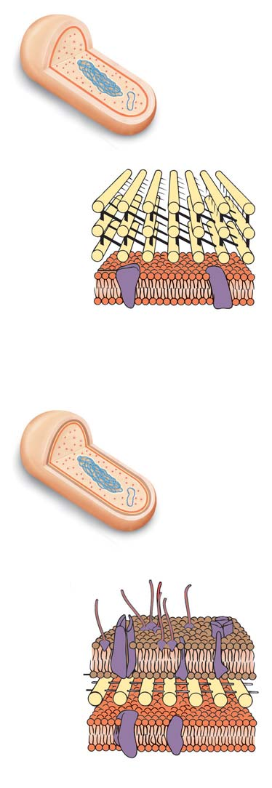
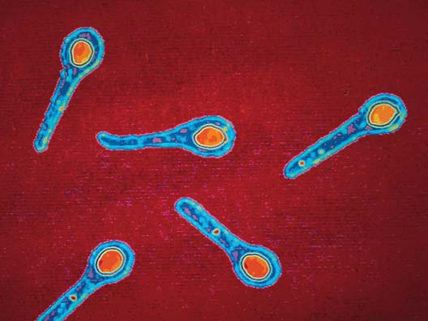
Bacterias y arqueas 521
los humanos. La mayoría de los procariotas móviles logran moverse mediante fl agelos giratorios. El número y la ubicación de los fl agelos son importantes en la clasifi cación de algunas especies de bacterias. A diferencia de los fl agelos de los eucariotas, los fl agelos de los procariotas no consisten de microtúbulos (vea el capítulo 4). Un fl agelo bacterial es un largo apéndice delgado que consta de tres partes: un cuerpo basal, un gancho y un solo fi lamento ( FIGURA 25-5 ). El cuerpo basal es una compleja estructura que ancla el fl agelo a la pared celular mediante placas con forma de disco. El gancho curvo conecta el cuerpo basal con el largo fi lamento hueco que se extiende hacia el ambiente exterior. El cuerpo basal es un motor, un poco parecido a la hélice del motor de un bote. La bacteria usa energía del ATP para bombear protones desde la célula. La difusión de estos protones de vuelta a la célula impulsa el motor que gira el fl agelo. El movimiento giratorio producido empuja la célula en forma muy parecida a como ocurre con la hélice que impulsa un barco a través del agua. El fl agelo gira en sentido contrario al de las manecillas del reloj, lo que impulsa a la célula hacia adelante. Las arqueas también tienen fl agelos. Éstos son más delgados que los de las bacterias. Los biólogos todavía no conocen la estructura del motor en el fl agelo de las arqueas. Algunos procariotas que carecen de fl agelos se mueven por deslizamiento. Muchos procariotas presentan quimiotaxis , movimiento en respuesta a químicos en el ambiente. Por ejemplo, las bacterias se mueven hacia el alimento. Ciertas bacterias también se mueven unas hacia otras. Sin embargo, las bacterias se alejan de ciertos químicos dañinos.
Repaso
■ ¿En qué formas difi eren las células procariotas de las células eucariotas?
■ ¿En qué difi eren las bacterias gram-positivas de las gramnegativas? ¿Por qué esto es importante?
■ ¿En qué difi ere un fl agelo bacterial de un fl agelo eucariota?
25.2 REPRODUCCIÓN Y EVOLUCIÓN PROCARIOTA
OBJETIVOS DE APRENDIZAJE
4 Describir la reproducción asexual en procariontas y resumir tres mecanismos (transformación, transducción y conjugación) que pueden conducir a recombinación genética. 5 Enunciar factores específi cos que contribuyan a la rápida evolución de las bacterias.
El material genético de un procariota se encuentra en el área nuclear, pero no está rodeado por una envoltura nuclear. En la mayoría de las especies, el material genético está contenido en una sola molécula circular de ADN. Si se extiende en su longitud total, esta molécula sería aproximadamente 1000 veces más larga que la célula misma. A diferencia del ADN en los cromosomas eucariotas, el ADN procariota tiene poca proteína asociada consigo. Además de su ADN genómico, la mayoría de las bacterias tienen uno o más plásmidos , fragmentos circulares más pequeños de ADN. Con frecuencia los plásmidos bacteriales tienen genes que codifi can enzimas catabólicas, para intercambio genético o para resistencia a los antibióticos. Los plásmidos se replican en forma independiente del ADN genómico o se integran a él (vea el capítulo 15).
- Micrografía MET coloreada de Vibrio cholerae . Esta bacteria flagelada produce cólera en los humanos.
0.5 μ m
Eye of Science/ Photo Researchers, Inc.
Citoplasma
Membrana plasmática Capa de peptidoglicano
Membrana exterior
Anillos de proteína
Gancho
Filamento
Cuerpo basal
Pared celular
- Estructura de un flagelo bacterial. El cuerpo basal es el motor. Consiste de una serie de placas con forma de disco que anclan el flagelo a la pared celular y la membrana plasmática. Estas placas giran el gancho y el filamento del flagelo.
FIGURA 25-5 Flagelos bacteriales
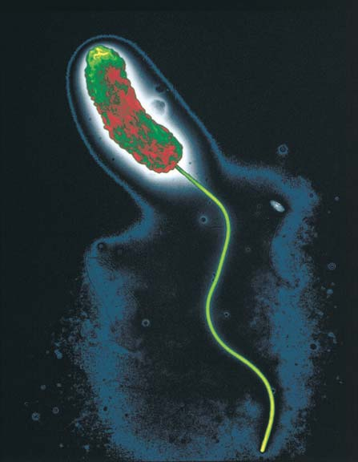
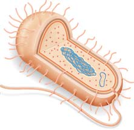
522 Capítulo 25
cia otro que no es su descendiente. (La transferencia de material genético de progenitor a descendiente se llama transferencia genética vertical ). La transferencia genética entre bacterias tiene lugar mediante tres mecanismos: transformación, transducción y conjugación.
- Cuando la bacteria muere, libera ADN que pueden tomar otras bacterias. En la transformación , una célula bacterial toma fragmentos de ADN extraño (o ARN) liberado por otra bacteria. El ADN debe ligarse a proteínas de enlace de ADN sobre la superfi cie de la bacteria. Una vez que entra a la célula bacterial, parte del ADN se incorpora en
La reproducción rápida contribuye al éxito de los procariotas
Los procariotas son organismos extremadamente exitosos en términos de su número y distribución. Su éxito se debe en gran medida a su notable capacidad para reproducirse con rapidez. Los procariotas se reproducen de modo asexual, por lo general mediante fi sión binaria , un proceso en el que una célula se divide en dos células similares, como en la fotografía de apertura del capítulo (vea también la fi gura 10-12). Primero, se replica el ADN circular; luego, una invaginación tanto de la membrana plasmática como de la pared celular forma una pared transversal. La fi sión binaria ocurre con notable rapidez. En condiciones ideales, algunas especies bacterianas se dividen en menos de 20 minutos. A esta tasa, si nada interfi ere, ¡una bacteria podría originar más de mil millones de bacterias en 10 horas! Por fortuna, las bacterias no pueden reproducirse a esta tasa durante mucho tiempo antes de que la falta de alimento o la acumulación de productos de desecho hagan más lenta su expansión poblacional. Una forma menos común de reproducción asexual entre bacterias es la gemación . En ésta, una célula desarrolla un abultamiento, o yema, que se agranda, madura y a la larga se separa de la célula progenitora. Algunas especies de bacterias (actinomicetos) se dividen mediante fragmentación . Dentro de la célula se desarrollan paredes que luego se separan en varias células nuevas.
Los procariotas transfi eren información genética
Aunque la reproducción sexual que involucra la fusión de gametos no ocurre en los procariotas, el material genético puede intercambiarse entre bacterias y entre arqueas. Tal intercambio de genes, o transferencia genética , resulta en recombinación genética. La transferencia genética horizontal ocurre cuando un organismo transfi ere material genético ha-
1
2
3
4
5
6
El ADN de un fago penetra la célula bacterial.
El ADN de fago puede integrarse con el ADN de una célula huésped como un profago.
Cuando el profago se vuelve lítico, el ADN bacterial se degrada y se producen nuevos fagos. Los nuevos fagos pueden contener algo de ADN bacterial.
La célula bacterial le ocurre lisis y libera muchos fagos, que entonces pueden infectar a otras células.
Fago infecta nueva célula huésped.
Los genes bacteriales introducidos en la nueva célula huésped se integran en el ADN del huésped. Se vuelven parte del ADN bacterial y se replican junto con él.
ADN de fago con genes bacteriales
ADN bacterial fragmentado
FIGURA 25-7 Transducción En la transducción, un fago transfi ere ADN bacterial de una bacteria a otra, lo que resulta en recombinación genética. La transducción es un importante medio de transferencia genética horizontal.
Bacteria muere y libera ADN.
Fragmentos de ADN extraño se enlazan a proteínas sobre la superficie de una bacteria viva.
El ADN entra en la célula y parte de él se incorpora en la célula huésped mediante recombinación recíproca.
2
3
1
ADN intercambiado
FIGURA 25-6 Transformación En la transformación, ADN extraño de una bacteria muerta entra a una bacteria huésped. Parte del ADN se intercambia, lo que resulta en una célula recombinante.
Bacterias y arqueas 523
el genoma del huésped mediante recombinación recíproca (se intercambia ADN) entre el nuevo ADN y el cromosoma del huésped ( FIGURA
25-6 ). Recuerde del capítulo 12 que Oswald T. Avery y sus colaboradores identifi caron experimentalmente al ADN como el agente que transformaba las células bacteriales y demostró que el ADN es la base química de la herencia. El ADN extraño también puede utilizarse como plásmidos. Cuando esto ocurre, el ADN no experimenta recombinación; permanece como plásmido separado del cromosoma bacterial. 2. En un proceso diferente de transferencia genética horizontal, la transducción , un fago lleva genes bacteriales de una célula bacterial a otra ( FIGURA 25-7 ). Por lo general, un fago sólo contiene su propio ADN. Sin embargo, en ocasiones un fago incorpora parte del ADN bacterial de su huésped. Luego, cuando el fago infecta a otra bacteria, transfi ere dicho ADN a su nuevo huésped. Entonces el cromosoma bacterial de este nuevo huésped se convierte en una recombinación de su ADN original y del ADN de otra bacteria. 3. En la conjugación , dos células de diferentes tipos de apareamiento entran en contacto y el material genético se transfi ere de una a la otra ( FIGURA 25-8 ). En contraste con la transformación y la transducción, la conjugación involucra contacto entre dos células.
La conjugación se ha estudiado extensamente en la bacteria Escherichia coli . En la población de E. coli existen células donadoras , o células F + , que tienen ADN que puede transmitirse a células receptoras , o células F − . Las células F + tienen una secuencia de ADN conocida como factor F (F signifi ca fertilidad) necesario para que una bacteria funcione como donadora durante la conjugación. El factor F puede estar en la forma de plásmido o puede ser parte del ADN en el cromosoma bacterial. Los genes F codifi can enzimas esenciales para transferir ADN. Ciertos genes F codifi can pelos sexuales , largas extensiones con forma de cabello que se proyectan desde la superfi cie celular. Los pelos sexuales de una célula F + reconocen y se enlazan con la superfi cie de una célula F − y forman un puente de conjugación citoplasmática entre las dos células. El plásmido F se replica a sí mismo y el ADN se transfi ere de la bacteria donadora a la receptora a través del puente de conjugación. Los plásmidos F también pueden tener otros tipos de genes, incluidos los que determinan la resistencia a los antibióticos.
La evolución procede rápidamente en las poblaciones bacteriales
Puesto que las bacterias se reproducen rápidamente mediante fi sión binaria, las mutaciones se transmi-
La conjugación, un mecanismo de transferencia genética horizontal, resulta en recombinación genética.
© Dennis Kunkel Microscopy, Inc./Phototake/Alamy
0.5 μ m
- Micrografía MEB coloreada de bacterias E. coli en conjugación. Las bacterias se conectan mediante un pelo sexual. Cuando se estimulan por el contacto, las células se acercan y forman un puente de conjugación entre células donadora y receptora ( no se muestra ).
Pelo sexual
1
2
3
4
- El proceso de conjugación.
La célula F + (donadora) produce pelo sexual.
El pelo sexual se desarrolla en el puente de conjugación.
Una sola cadena del ADN del plásmido F se transfiere de la célula F + a la célula F – .
El ADN se replica. Ambas células bacteriales contienen ahora plásmido F de doble cadena. La célula F – se convirtió en una célula F + .
Cromosoma bacterial Plásmido F
Célula F + (donadora) Célula F – (receptora)
FIGURA 25-8 Animada Conjugación En la conjugación, una bacteria donadora transfi ere ADN plásmido a una bacteria receptora. La conjugación requiere contacto entre las células.
PUNTO CLAVE
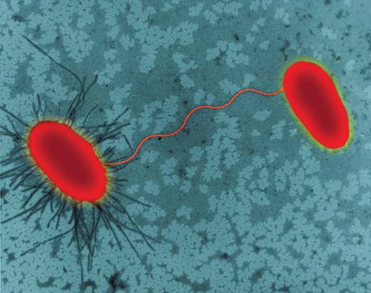
524 Capítulo 25
primeras bacterias desarrollaron la habilidad para usar al Sol como fuente de energía. Estos primitivos fotótrofos usaron ácido sulfh ídrico para reducir el dióxido de carbono. Liberaban azufre como producto de desecho. Hace aproximadamente 2700 millones de años, en las cianobacterias primitivas evolucionó la capacidad de usar agua, en lugar de ácido sulfh ídrico, para reducir el dióxido de carbono. El oxígeno se liberó como producto de desecho. Cuando se consideran las fuentes de carbono y de energía, los procariotas pueden clasifi carse en cuatro grupos principales ( TABLA 25-1 ):
- Los fotoautótrofos , como las cianobacterias, usan la energía de la luz solar para sintetizar compuestos orgánicos a partir de dióxido de carbono y otros compuestos inorgánicos. 2. Los quimioautótrofos también emplean el dióxido de carbono como fuente de carbono, pero no usan luz solar como su fuente de energía. En vez de ello, obtienen energía por la oxidación de sustancias químicas inorgánicas como amoniaco (NH 3 ) y ácido sulfh ídrico (H 2 S). 3. Los fotoheterótrofos , como las bacterias púrpura no sulfurosas, obtienen su carbono de otros organismos, pero usan clorofi la y otros pigmentos fotosintéticos para atrapar la energía de la luz solar. 4. La mayoría de los procariotas son quimioheterótrofos . Dependen de moléculas orgánicas para obtener carbono y energía. Muchos quimioheterótrofos bacteriales son desintegradores de vida libre que obtienen su carbono y energía de materia orgánica muerta. Estas bacterias en ocasiones se llaman saprótrofos . Algunos quimioheterótrofos son patógenos que obtienen sus nutrientes de los organismos que infectan. Dañan a sus huéspedes al provocarles enfermedades. Otras bacterias heterótrofas benefi cian a sus huéspedes. Por ejemplo, algunas de las bacterias que habitan el intestino grueso humano producen vitamina K y ciertas vitaminas B para sus huéspedes.
La mayoría de los procariotas requieren oxígeno
Ya sean heterótrofas o autótrofas, la mayoría de las células bacteriales son aerobias y requieren oxígeno para la respiración celular. Muchas son anaerobias facultativas que usan oxígeno para la respiración celular si está disponible, pero pueden realizar metabolismo anaerobio cuando es necesario. Otras bacterias son anaerobias obligadas que realizan respiración anaerobia; respiran con aceptores de electrones terminales distintos al oxígeno; por ejemplo, sulfato (SO 4 2 − ), nitrato (NO 3 − ) o hierro (Fe 2 + ). Algunos anaerobios obligados, incluidas algunas arqueas, en realidad mueren incluso con concentraciones bajas de oxígeno.
ten con presteza a las nuevas generaciones. Las mutaciones que confi eren alguna ventaja se dispersan a lo largo de la población y los efectos de la selección natural son evidentes en períodos breves. La transferencia genética horizontal contribuye enormemente a la rápida evolución que tiene lugar en los procariotas. La adquisición de nuevo ADN y la recombinación genética son fuentes importantes de la variación genética requerida para la diversifi cación y la adaptación. El ADN nuevo introducido en el genoma de una bacteria representa material en bruto para la evolución. Los genes nuevos están sujetos a mutación y sobre ellos actúan las fuerzas de la selección natural. Los cambios en el material genético se transmiten a generaciones sucesivas mediante fi sión binaria. Los cambios que resultan en adaptación pueden difundirse rápidamente a través de poblaciones bacteriales futuras. La recombinación genética también es un importante mecanismo en la evolución de las arqueas.
Repaso
■ ¿Cómo se reproducen los procariotas? ¿Qué mecanismos resultan en la transferencia genética?
■ ¿Cómo contribuye la transducción a la rápida evolución de las poblaciones bacteriales?
■ ¿Cuáles son los pasos que tienen lugar durante la conjugación?
25.3 ADAPTACIONES NUTRICIONALES Y METABÓLICAS
OBJETIVO DE APRENDIZAJE
6 Describir las formas principales por las cuales los procariotas llevan a cabo la nutrición y la captura de energía, y comparar sus requerimientos de oxígeno.
Con base en las dos formas principales de obtención de nutrientes , los procariotas se clasifi can como autótrofos ( -trofo proviene de la palabra griega que signifi ca “nutrición”) o heterótrofos. Los autótrofos pueden usar compuestos inorgánicos, como dióxido de carbono, como una fuente de carbono para fabricar sus moléculas orgánicas. La mayoría de los procariotas son heterótrofos que obtienen átomos de carbono de los compuestos orgánicos de otros organismos. Con base en las dos formas principales de captura de energía , los autótrofos se clasifi can como quimiótrofos y autótrofos. Los quimiótrofos obtienen su energía a partir de compuestos químicos. Los fotótrofos capturan energía de la luz. Hace más de tres mil millones de años, las
Modos de nutrición y captura de energía
Modo de nutrición Fuente de energía Fuente de carbono Ejemplos de organismos
Autótrofo
Fotoautótrofo Luz solar CO 2 Cianobacterias, bacterias púrpuras sulfurosas
Quimioautótrofo Químicos inorgánicos (por CO 2 Ciertas proteobacterias, la mayoría de arqueas; por ejemplo, ejemplo, NH 3 , H 2 S, Fe 2 + ) metanógenos, halófi los extremos
Heterótrofo
Fotoheterótrofo Luz solar Compuestos orgánicos Bacterias púrpura y verde no sulfurosas
Quimioheterótrofo Compuestos orgánicos Compuestos orgánicos Desintegradores de vida libre, la mayoría de los patógenos bacteriales
TABLA 25-1
Bacterias y arqueas 525
Con base en la obra de Woese y en otros datos recientes, los sistemáticos ahora clasifi can a los descendientes modernos de estas dos líneas antiguas en dos dominios: Archaea y Bacteria ( FIGURA 25-9 ). Se considera que estos grupos divergieron de un ancestro común hace aproximadamente cuatro mil millones de años. Arqueas y bacterias fueron los únicos organismos vivientes en el planeta durante alrededor de dos mil millones de años. Por ende, arqueas y bacterias han tenido mucho tiempo para evolucionar y adaptarse a todo tipo de ambientes. Su diversidad es asombrosa. La transferencia genética horizontal también contribuyó a la diversidad de estos organismos. Como resultado de la transferencia genética, en ocasiones de especies con parentesco distante, los genomas de arqueas y bacterias en realidad son una mezcla de genes de muchos procariotas.
Principales caracteres que distinguen los tres dominios
Muchos caracteres importantes distinguen a arqueas de bacterias. En contraste con las bacterias, las arqueas no tienen peptidoglicano en sus paredes celulares. Aunque sus membranas plasmáticas son estructuralmente similares, son químicamente únicas. En las membranas plasmáticas de bacterias y eucariotas, ácidos grasos de cadena recta se unen a moléculas de glicerol mediante enlaces éster . En contraste, en las arqueas no se encuentran componentes de ácido graso. En vez de ello, hidrocarburos de cadena ramifi cada (sintetizados a partir de unidades isopreno) se enlazan a glicerol mediante enlaces éter ( TABLA 25-2 ).
Algunos procariotas fi jan y metabolizan nitrógeno
Todos los organismos requieren nitrógeno para fabricar aminoácidos y ácidos nucleicos. Algunas bacterias (por ejemplo, ciertas cianobacterias) y arqueas (por ejemplo, los metanógenos) pueden reducir el nitrógeno en la atmósfera a amoniaco. Este proceso se llama fi jación de nitrógeno . El amoniaco producido mediante fi jación de nitrógeno se convierte en iones de amonio (NH 4 + ). Las bacterias que fi jan nitrógeno pueden usar estas formas simples de nitrógeno para producir compuestos orgánicos. Ciertas bacterias convierten amoniaco o iones de amonio en nitrito (NO 2 − ) y otras convierten nitrito en nitrato (NO 3 − ). Este proceso, llamado nitrifi cación , convierte el nitrógeno en una forma que puedan utilizar plantas y hongos. Los animales obtienen nitrógeno a partir de compuestos orgánicos cuando comen a otros organismos. Como se estudiará en una sección posterior, a fi nal de cuentas todos los otros organismos dependen de la fi jación de nitrógeno y de la nitrifi cación por parte de los procariotas para su supervivencia (vea el capítulo 55).
Repaso
■ ¿Cómo obtienen energía los quimioheterótrofos?
■ ¿En qué difi eren los anaerobios facultativos de los anaerobios obligados? ¿En qué difi eren de los aerobios?
■ ¿Cómo obtienen las bacterias el nitrógeno necesario para producir aminoácidos y ácidos nucleicos?
25.4 LA FILOGENIA DE LOS DOS DOMINIOS PROCARIOTAS
OBJETIVOS DE APRENDIZAJE
7 Comparar las características de los tres dominios: Archaea, Bacteria y Eukarya. 8 Distinguir entre los dos grupos principales de arqueas e identifi car los tipos específi cos de arqueas que pertenecen a cada grupo. 9 Describir los principales grupos de bacterias estudiados en este capítulo (consulte la tabla 25-4).
Bajo un microscopio, la mayoría de los procariotas parecen más bien similares en tamaño y forma. Sin embargo, mediante análisis de secuencias de pequeñas subunidades de ARN ribosomal 16S (SSU ARNr), Carl Woese y sus colaboradores demostraron que fundamentalmente existen dos grupos diferentes de procariotas (vea el capítulo 23). Cada grupo tiene secuencias de identidad , regiones de SSU ARNr que tienen secuencias de nucleótidos únicas. La explicación es que, después de divergir, las poblaciones de procariotas se diversifi caron y ocurrieron mutaciones que afectaron las secuencias de ARN. Con tales análisis, Woese planteó la hipótesis de que los procariotas antiguos se dividieron en dos linajes, temprano en la historia de la vida.
Alfa
Beta
Gamma
Delta
Épsilon
Gram-positivas
Cianobacterias
Clamidias
Espiroquetas
Euriarqueota
Crenarqueota
Eucariontes
Dominio Bacteria Dominio Archaea Dominio Eukarya
Proteobacteria
Ancestro común de todos los organismos vivientes
FIGURA 25-9 Tres dominios Este diagrama muy simplifi cado muestra algunos taxones representativos de los dominios Bacteria y Archaea. Las relaciones ilustradas se basan en análisis de secuencias de genes de ARN ribosomal. Conforme los taxonomistas consideren datos adicionales, estas relaciones se modi fi carán.
526 Capítulo 25
que desarrollan árboles fi logenéticos con base en secuenciación de genomas enteros argumentan que puede haber 1000 genes que codifi can proteínas por cada gen que codifi ca un ARNr. Estos investigadores prefi eren considerar las proporciones de genes (o proteínas) que tienen en común genomas de varios grupos. La taxonomía de arqueas y bacterias cambia continuamente conforme los sistemáticos estudian datos moleculares recientes que brindan nuevas pistas para la fi logenia de estos grupos. Aunque la taxonomía procariota es controversial y cambia de manera continua, se han clasifi cado aproximadamente 7000 especies de procariotas. Se considera que existen cientos de miles de especies adicionales. Los editores de Bergey’s Manual of Systematic Bacteriology , considerado el texto de referencia defi nitivo por los microbiólogos, dividieron a las arqueas en dos fi los y a las bacterias en 20 fi los con base en el análisis de ARNr 16S.
Muchas arqueas habitan ambientes hostiles
El dominio Archaea consiste de dos grupos principales (fi los): Crenarchaeota y Euryarchaeota ( TABLA 25-3 ). Esta fi logenia se basa en ARNr 16S y en la secuenciación de genomas completos. Los sistemáticos todavía no determinan si estos dos grupos representan fi los o taxones de nivel superior. Si son taxones de un nivel superior, las ramas de cada grupo pueden representar fi los. Las crenarqueotas consisten principalmente de termófilas extremas, arqueas que requieren una temperatura muy elevada o muy baja para crecer. La temperatura óptima para muchos es mayor que 80°C. Estas arqueas habitan ambientes muy calientes, en ocasiones muy ácidos. Una especie se encuentra en las fuentes termales sulfurosas del Parque Yellowstone a temperaturas cercanas a 80°C y valores de pH de 1 a 2, el pH del ácido sulfúrico concentrado ( FIGURA
25-10a ). Otras habitan áreas volcánicas bajo el mar. Una especie, que se encuentra cerca de profundos respiraderos hidrotérmicos en el lecho marino del océano Pacífico, vive a temperaturas que van de los 80°C a los 120°C. En contraste, algunos crenarqueotas viven en am-
R
Enlace éster
C
O
R O R R
Enlace éter
C
H
H
O
La ausencia de un segundo átomo de oxígeno electronegativo hace los enlaces éter más fuertes que los enlaces éster. Esta estructura de membrana única puede contribuir a la habilidad de las arqueas para sobrevivir y proliferar en ambientes difíciles. En algunas formas, las arqueas son más parecidas a los eucariotas que a las bacterias. Por ejemplo, las arqueas no tienen el ARN polimerasa simple que se encuentra en las bacterias. Como los eucariotas, su proceso de traducción comienza con metionina, mientras que en las bacterias la traducción comienza con formilmetionina (vea el capítulo 13). Además, muchos antibióticos que afectan a las bacterias no afectan a las arqueas o eucariotas. Las bacterias también comparten algunos caracteres (que están ausentes en las arqueas) con los eucariotas. Por ejemplo, como se indicó líneas arriba, bacterias y eucariotas tienen ambos lípidos de membrana con enlace éster, mientras que las arqueas tienen lípidos de membrana con enlace éter. Algunos microbiólogos plantean la hipótesis de que los eucariotas son un producto de fusión entre un arquea, que aportó componentes para transcripción y traducción, y una bacteria, que aportó enzimas necesarias para el metabolismo de energía.
La taxonomía de arqueas y bacterias cambia continuamente
La taxonomía procariota ahora se basa principalmente en datos moleculares, principalmente secuenciación de ARN, y más recientemente, en secuenciación de todos los genomas. Los grupos que se ramifi caron más temprano tuvieron más tiempo para acumular mutaciones en su SSU ARNr. Sus secuencias de nucleótidos son menos similares que las de los grupos que divergieron más recientemente. Los microbiólogos
Comparación de los tres dominios
Característica Bacteria Archaea Eukarya
Envoltura nuclear Ausente Ausente Presente
Organelos encerrados en membrana Ausente Ausente Presente
Cromosoma circular Presente (lineal en algunas especies) Presente Ausente
Número de cromosomas Usualmente uno (también puede Usualmente uno (también puede tener Usualmente muchos tener plásmido) plásmido)
Histones asociados con ADN Ausente Presente Presente
Peptidoglicano en pared celular Presente Ausente Ausente
Estructura de lípidos en membrana Ácidos grasos de cadena recta ligados Hidrocarburos de cadena ramifi cada Ácidos grasos de cadena recta plasmática a glicerol mediante enlaces éster ligados a glicerol mediante enlaces éter ligados a glicerol mediante enlaces éster
Tamaño de ribosomas 70S* 70S 80S excepto en mitocondrias y cloroplastos
ARN polimerasa Un ARN polimerasa relativamente Un ARN polimerasa relativamente Muchos ARN polimerasa simple complejo relativamente complejos
Traducción Comienza con formilmetionina Comienza con metionina Comienza con metionina
Crecimiento arriba de 70°C Sí Sí No
*Los números 70S y 80S se refi eren al coefi ciente de sedimentación (una medida del tamaño relativo) cuando se centrifuga.
TABLA 25-2
Bacterias y arqueas 527
uno de los organismos celulares más pequeños identifi cados a la fecha. También tiene uno de los genomas más pequeños (menos de 500,000 nucleótidos). Nanoarchaeum vive fi jo a otras arqueas y depende de su huésped para muchas de sus necesidades metabólicas. Muchas arqueas habitan condiciones menos extremas. Por ejemplo, las arqueas no extremas son abundantes en el suelo y en aguas superfi ciales oceánicas frías cerca de la Antártida. Los microbiólogos sugieren que las arqueas pueden ser importantes en los ciclos biogeoquímicos y en las cadenas alimenticias marinas. No se han identifi cado arqueas patógenas.
Las bacterias son los procariotas más familiares
Las bacterias están ampliamente distribuidas en el ambiente y son mejor conocidas por los microbiólogos que las arqueas. Aquí se consideran cinco grandes grupos: proteobacterias (gramnegativas), cianobacterias (gramnegativas), bacterias grampositivas, clamidias (gramnegativas) y espiroquetas (gramnegativas). Estos grupos se resumen en la TABLA
25-4 .
Repaso
■ ¿Cuáles son los dos tipos de arqueas que habitan ambientes extremos? ¿Cuáles son metanógenas?
■ ¿En qué difi eren estas bacterias (descritas en la tabla 25-4): (1) proteobacterias, (2) cianobacterias y (3) clamidias?
bientes muy fríos (por debajo de 15°C). Algunas de estas arqueas son arrastradas por las corrientes en el océano y son parte importante del plancton. Las euriarqueotas también incluyen muchas arqueas que habitan ambientes extremos. Este grupo incluye metanógenas, halófi las extremas y termófi las extremas. Las metanógenas (productoras de metano) son un gran grupo diverso que habita ambientes libres de oxígeno en aguas negras, pantanos y los aparatos digestivos de humanos y otros animales. Son anaerobios obligados que producen gas metano a partir de compuestos de carbono simples. Las metanógenas son importantes en el reciclaje de componentes de productos orgánicos de organismos que habitan pantanos. Las metanógenos que habitan los aparatos digestivos de vacas y otros animales de pastoreo producen metano, que liberan los animales. Las metanógenas producen más de 80% del metano (más de dos mil millones de toneladas anuales) en la atmósfera de la Tierra. El metano es un importante gas de efecto invernadero. Las halófi las extremas son heterótrofas que requieren grandes cantidades de Na + para su crecimiento. Viven en soluciones de salmuera saturadas como estanques salados, el mar Muerto y el Gran Lago Salado ( FIGURA 25-10b ). Las halófi las extremas usan respiración aerobia para producir ATP. Sin embargo, también llevan a cabo una forma de fotosíntesis en la que capturan la energía de la luz solar usando un pigmento púrpura ( bacteriorodopsina ). Este pigmento es muy similar al pigmento rodopsina involucrado en la visión animal. Nanoarchaeum es un termófi lo extremo anaerobio muy pequeño (400 nm) que ahora se clasifi ca como euriarqueota. Este microbio es
© Mike Cavaroc/Alamy
- Termófilas extremas. Colonias anaranjadas y amarillas de termófilas extremas proliferan en Grand Prismatic Spring en el Parque Nacional Yellowstone, en Wyoming, EUA.
© Helen E. Carr/Biological Photo Service
- Halófilas extremas. Estos estanques de evaporación de agua de mar cerca de la Bahía de San Francisco tienen colores rosa, anaranjado y amarillo por la gran cantidad de halófilas extremas que los habitan. Los colores son resultado de pigmentos en las membranas celulares. Estas bacterias son inocuas y los estanques se usan para producir sal de manera comercial.
FIGURA 25-10 Arqueas que habitan en ambientes extremos
528 Capítulo 25
Principales grupos de bacterias
Proteobacterias (gramnegativas) Un gran grupo muy diverso de bacterias gramnegativas. Con base en secuencias de ARNr, el grupo se divide en cinco subgrupos designados como alfa, beta, gamma, delta y épsilon.
Proteobacterias alfa Incluye muchos simbiontes de plantas y animales, y algunos patógenos. Las especies Rhizobium viven simbióticamente en los nódulos de las raíces de leguminosas (por ejemplo, frijoles) y convierten el nitrógeno atmosférico en una forma utilizable por las plantas (fi jación de nitrógeno). Las rickettsias son bacterias muy pequeñas con forma de bastón. Algunas especies son patógenas para los humanos y otros animales, las transmiten los artrópodos a través de mordidas o mediante contacto con sus excrementos. Entre las enfermedades se encuentran el tifus (transmitido por pulgas y piojos) y la fi ebre de las montañas Rocosas (transmitida por garrapatas).
Proteobacterias beta Varios grupos diversos, incluidas las Nitrosomonas , que oxidan amoniaco. Entre las bacterias patógenas de este grupo se incluye la Neisseria gonorrhoeae , que causa gonorrea.
Proteobacterias gamma Incluye las enterobacterias , desintegradoras que viven en la materia vegetal en descomposición, patógenos y varias bacterias que habitan en los humanos. Aunque la Escherichia coli es una habitante normal de los intestinos animales, ciertas cepas pueden causar diarrea de moderada a severa. Una especie de Salmonella infecta los alimentos y produce una toxina que causa una forma de intoxicación alimenticia, otra especie causa fi ebre tifoidea.
Los vibrios son principalmente marinos, algunos son bioluminiscentes. El Vibrio cholerae causa cólera.
Las pseudomonas son heterótrofas que producen pigmentos no fotosintéticos; causan enfermedades en plantas y animales, incluidos los humanos.
Las bacterias púrpura sulfurosas son fotoautótrofas que no producen oxígeno.
Proteobacterias delta Incluye las mixobacterias (bacterias mucilaginosas), que secretan mucílago y se deslizan o reptan. Cuando se agotan los nutrientes, estas bacterias se agrupan en estructuras reproductivas multicelulares con tallo llamadas cuerpos fructíferos. Las células bacteriales dentro del cuerpo fructífero entran en etapa de latencia. Cuando las condiciones son favorables, las células latentes se vuelven activas.
Proteobacterias épsilon Pequeño grupo de bacterias que habitan el sistema digestivo animal. La Helicobacter puede causar úlceras gástricas.
(continúa)
Science Photo Library
2 μ m
Micrografía MEB de colonia de Escherichia coli La E. coli es una proteobacteria gamma.
© Phototake, Inc./ PhototakeUSA.com
50 μ m
Micrografía MEB de cuerpo fructífero de la mixobacteria Stigmatella aurantiaca Las células latentes protectoras dentro de los cuerpos fructíferos son muy resistentes al calor y la sequía. Las mixobacterias son proteobacterias delta.
TABLA 25-4
Dos grupos de arqueas
Crenarchaeota
Eye of Science/Photo Researchers, Inc.
1 μ m
Micrografía MEB de Pyrococcus furiosus , una anaerobia que habita en la arena marina Esta metanógena es enormemente resistente al calor; su temperatura óptima es 100 ° C. El Pyrococcus crece en azúcares y péptidos pequeños, que sirven como donadores de electrones. El ADN polimerasa de la P. furiosus se usa en el proceso de reacción en cadena de polimerasa (PCR por sus siglas en inglés) de amplifi cación de ADN ya que es estable a altas temperaturas y es enormemente preciso.
Algunas termófi las extremas (proliferan a 70 ° C y algunas a temperaturas mayores a 100 ° C); otras pueden vivir a temperaturas por debajo de 15 ° C. Muchas son quimioautótrofas. Parte importante del plancton en mares fríos ricos en oxígeno.
Euryarchaeota
Dr. Kari Lounatmaa/Science Photo Library/Photo Researchers, Inc.
1 μ m
Micrografía MET de una metanógena ( Methanospirillum hungatii ) que experimenta división celular Otras dos arqueas se ven en sección transversal. Cuando no se dividen, estas arqueas tienen forma espiral.
Incluye metanógenas, halófi las (no todas extremas) y acidófi las. En este fi lo se incluyen algunas termófi las extremas.
TABLA 25-3
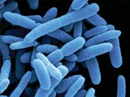
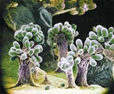
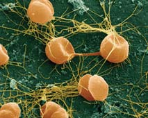
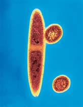
Bacterias y arqueas 529
Principales grupos de bacterias (continuación)
Cianobacterias (gramnegativas) Las cianobacterias contienen clorofi la a y son las únicas procariotas que, como plantas y algas, realizan fotosíntesis que genera oxígeno. Las cianobacterias fueron los primeros organismos que realizaron fotosíntesis generadora de oxígeno, se consideran muy importantes en la evolución de las formas de vida debido a que su fotosíntesis cambió la primitiva atmósfera reductora de la Tierra por una atmósfera oxidante. Se cree que los cloroplastos evolucionaron a partir de cianobacterias endosimbióticas. Habitan estanques, lagos, albercas, suelo húmedo, troncos muertos, corteza de árbol. Algunas forman fi lamentos, otras especies son solitarias. Como productoras primarias son una importante fuente de alimento para organismos marinos y de agua dulce. Algunas especies tienen estructuras especiales que fi jan nitrógeno.
Cengage
20 μ m
Micrografía obtenida con un microscopio óptico (MO) de Anabaena , una cianobacteria fi lamentosa que fi ja nitrógeno La fi jación de nitrógeno tiene lugar en las células redondas, llamadas heterocistos .
Bacterias grampositivas Un grupo extremadamente diverso. A continuación se citan algunos ejemplos.
Los actinomicetos superfi cialmente parecen hongos. Sin embargo, tienen peptidoglicano en sus paredes celulares, carecen de envolturas nucleares y tienen otras características de los procariotas. La mayoría de los actinomicetos son saprótrofos que descomponen materiales orgánicos en el suelo. Algunos son anaerobios. Muchas especies del género Streptomyces producen antibióticos como estreptomicina, eritromicina, cloranfenicol y las tetraciclinas. Algunos actinomicetos causan severas enfermedades pulmonares y otras infecciones en humanos y otros animales.
Las bacterias de ácido láctico fermentan el azúcar y producen ácido láctico como principal producto fi nal. Habitan en el material vegetal en descomposición, la leche y otros productos lácteos, son responsables del característico sabor del yogur, encurtidos, salmuera y aceitunas verdes. Están entre los habitantes normales de la boca y vagina humanos.
Las micobacterias son delgados bastones irregulares, contienen una sustancia cerosa en sus paredes celulares. Una especie causa la tuberculosis, otra causa lepra.
Los estreptococos habitan la boca y el sistema digestivo de humanos y algunos otros animales. Entre las especies dañinas están las que causan “anginas”, caries dental, una forma de neumonía, fi ebre escarlatina y fi ebre reumática (vea la apertura del capítulo).
Por lo general, los estafi lococos viven en la nariz y la piel. Patógenos oportunistas que causan enfermedades cuando la inmunidad del huésped se reduce. El Staphylococcus aureus causa forúnculos e infecciones de la piel (algunas extremadamente severas), puede infectar heridas. Ciertas cepas de S. aureus causan una forma de intoxicación alimenticia, otras cepas causan síndrome de shock tóxico (vea la fi gura 25-14).
Los clostridios son anaerobios. Una especie que causa tétanos, otra causa gangrena gaseosa. El Clostridium botulinum puede provocar botulismo, un tipo usualmente mortal de intoxicación por alimentos.
Los micoplasmas son un grupo de bacterias muy pequeñas que carecen de paredes celulares. Evolucionaron a partir de bacterias con paredes celulares grampositivas. Habitan en el suelo y aguas negras, algu nas son parásitas de plantas o animales. Algunas habitan en las membranas mucosas humanas pero no suelen causar enfermedades, una especie causa un tipo leve de neumonía bacterial en humanos.
© Fedorov Oleksly/ Shutterstock
10 μ m
Micrografía MEB de Actinomycetes naeslundi , una bacteria que vive en el suelo y forma colonias fi lamentosas
© David M. Phillips/ Visuals Unlimited, Inc.
5 μ m
Micrografía MEB de Mycoplasma en células de fi broblasto
Clamidias (gram-negativas) Las clamidias carecen de peptidoglicano en sus paredes celulares. Son parásitas energéticas, dependientes por completo de sus huéspedes para obtener ATP. Infectan a casi cualquier especie de ave y mamífero. Una cepa de Chlamydia causa tracoma, la principal causa de ceguera en el mundo. Las clamidias de transmisión sexual son la principal causa de Enfermedad Infl amatoria Pélvica (EIP) en mujeres.
© David M. Phillips/ Visuals Unlimited, Inc.
1 μ m
Micrografía MET de Chlamydia trachomatis en célula de oviducto humana
Espiroquetas (gram-negativas) Las espiroquetas son bacterias con forma espiral y paredes celulares fl exibles; se mueven mediante fl agelos internos únicos llamados fi lamentos axiales . Algunas especies son de vida libre, mientras que otras forman asociaciones simbióticas, algunas son parásitas. La espiroqueta de mayor importancia médica es la Treponema pallidum , que causa sífi lis.
© Dennis Kunkel Microscopy/ Visuals Unlimited, Inc.
5 μ m
Micrografía MO de Treponema pallidum , la espiroqueta que causa la sífi lis
TABLA 25-4
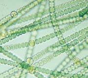
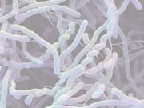
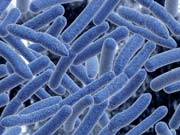
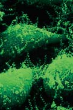
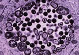
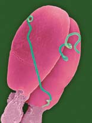
530 Capítulo 25
blación. En algunas especies de insectos, los machos infectados pueden reproducirse sólo cuando copulan con hembras infectadas que portan la misma cepa de Wolbachia . En otras especies, estos parásitos convierten a los insectos machos en hembras. En algunas especies de avispas, la Wolbachia induce partenogénesis , el desarrollo de óvulos no fertilizados en organismos adultos. Puesto que afectan la reproducción de sus huéspedes, la Wolbachia y otros parásitos reproductores pueden infl uir en la divergencia evolutiva e incluso en la extinción de algunas especies. La Wolbachia también puede afectar la evolución mediante transferencia genética horizontal.
Muchas bacterias forman biopelículas
Muchos tipos de bacterias que habitan ambientes acuosos forman densas películas llamadas biopelículas que se unen a superfi cies sólidas. La bacteria en una biopelícula forma capas de hasta 200 m m de grosor. Las bacterias segregan una sustancia pegajosa rica en polisacáridos y se incrusta en esta matriz. Las biopelículas son comunidades de microorganismos. La mayoría de las biopelículas consiste de muchas especies de bacterias y pueden incluir otros tipos de organismos, como arqueas, hongos y protozoarios. Los científi cos han descubierto evidencia de biopelículas antiguas en sedimentos de ambientes marinos costeros con edades de 3500 millones de años. La placa dental que se forma en los dientes es un ejemplo familiar de biopelícula ( FIGURA 25-11 ). La placa dental consiste de varios cientos de tipos diferentes de bacterias y arqueas. Las biopelículas usualmente también se forman sobre las superfi cies de lentes de contacto y catéteres. En ocasiones se desarrollan en implantes quirúrgicos como marcapasos y prótesis articulares.
Los procariotas tienen papeles ecológicos clave
Las bacterias, en especial los actinomicetos y las mixobacterias, son los habitantes más numerosos del suelo. Como se describió antes en este
25.5 IMPACTO SOBRE ECOLOGÍA, TECNOLOGÍA Y COMERCIO
OBJETIVOS DE APRENDIZAJE
10 Identifi car los papeles ecológicos cruciales que tienen los procariotas. 11 Describir algunos de los papeles importantes que desempeñan los procariotas en el comercio y la tecnología.
Los procariotas habitan virtualmente todos los ambientes de la Tierra y son miembros vitales de la biosfera. Afectan a otros organismos de manera directa y por los papeles ecológicos que desempeñan. Los procariotas producen nitrógeno en formas utilizables por otros organismos y son un depósito de nutrientes. Estos organismos microscópicos reciclan nutrientes y son partícipes clave en los ciclos biogeoquímicos.
Los procariotas forman relaciones íntimas con otros organismos
Los procariotas interactúan con otros organismos en formas tanto benéfi cas como dañinas. Una relación íntima entre miembros de dos o más especies se llama simbiosis . Los participantes en una relación simbiótica se llaman simbiontes . Las relaciones simbióticas surgen por coevolución. Tres formas de simbiosis son: mutualismo, comensalismo y parasitismo. El mutualismo es una relación simbiótica en la que ambos participantes se benefi cian. Las vacas y otros rumiantes (animales que rumian) tienen relaciones mutualistas con bacterias que habitan en sus sistemas digestivos. Los rumiantes carecen de enzimas para digerir la celulosa. Ellos proporcionan a las bacterias un hogar rico en nutrientes y las bacterias digieren la celulosa para ellos. Billones de bacterias habitan el intestino humano rico en nutrientes. Algunas de ellas son bacterias mutualistas. Por ejemplo, a cambio de nutriente y de un lugar para vivir, los bacteroides descomponen carbohidratos complejos indigeribles en azúcares que su huésped humano puede absorber. Estas bacterias también producen ciertas vitaminas que sus huéspedes absorben y usan. Además, los bacteroides promueven la proliferación de vasos sanguíneos que mejoran la función intestinal. Investigadores han reportado que estas bacterias pueden activar genes específi cos en las células del intestino de su huésped; aparentemente, pueden inducir la síntesis de un compuesto que puede matar bacterias competidoras. En el comensalismo , un participante se benefi cia y el otro no es dañado ni auxiliado. Muchas bacterias que habitan el intestino humano son comensales que viven de alimento no utilizado. En el parasitismo , un participante vive sobre el otro o dentro de él. El parásito se benefi cia y el huésped es dañado. Las bacterias causantes de enfermedad por lo general no se consideran parásitos obligados porque dichos patógenos usualmente pueden sobrevivir en otras formas.
Algunos tipos de bacterias pueden infl uir en la evolución de otras especies
La proteobacteria Wolbachia infecta a muchos invertebrados, incluidos insectos, arañas, crustáceos y nematodos (gusanos redondos). La Wolbachia se transmite de generación en generación en los óvulos de sus huéspedes, de modo que a los huéspedes machos no les son útiles. En consecuencia, dichos parásitos limitan o erradican a los machos de la po-
© Steve Gschmeissner/Photo Researchers, Inc.
10 μ m
FIGURA 25-11 Una biopelícula familiar: la placa dental Micrografía MEB coloreada de placa dental, que consiste de una película de bacterias ( rojo ) incrustada en una matriz de glicoproteína ( azul ). Las bacterias en la placa pueden producir ácidos que erosionan el esmalte dental, lo que conduce a caries.
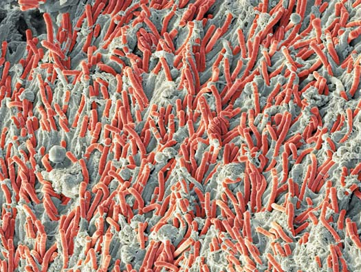
Bacterias y arqueas 531
llan bacterias modifi cadas genéticamente para la producción de muchos otros productos con utilidad médica y agrícola. La fermentación microbiana ayuda a producir muchos alimentos y bebidas. La bacteria del ácido láctico se usa para producir acidófi los de leche, yogur, encurtidos, aceitunas y salmuera. En la producción de queso se usan muchos tipos de bacterias. Las bacterias están involucradas en la elaboración de carnes fermentadas como el salami, y en la producción de vinagre, salsa de soya, chocolate, ciertas vitaminas B (B 12 y ribofl avina) y ácido cítrico, un compuesto que se añade a los dulces y a la mayoría de las bebidas gaseosas. Las bacterias se usan en biorremediación , el proceso de usar microorganismos (y en ocasiones otros organismos) para desintoxicar o remover petróleo, gasolina y otros contaminantes o químicos tóxicos del ambiente. Los microorganismos descomponen ciertas toxinas y dejan subproductos metabólicos inocuos como dióxido de carbono y cloruros ( FIGURA 25-12 ). Más de 1000 diferentes especies de bacterias y hongos se usan para limpiar varias formas de contaminación, y los microbiólogos buscan otros. Por ejemplo, bacterias y otros microorganismos se usan en derrames de petróleo para descomponer el petróleo y oxidarlo a CO 2 . En el tratamiento de aguas negras también se usan microorganismos, así como en los vertederos para descomponer desechos sólidos. Las arqueas también son económicamente importantes. Por ejemplo, las arqueas adaptadas a altas temperaturas o condiciones extremadamente ácidas son fuente de enzimas que pueden usarse en estas condiciones extremas. Enzimas arqueanas se han agregado a detergentes de lavandería e industriales para aumentar su desempeño a temperaturas y niveles de pH más elevados. Otra enzima arqueana es útil en la industria alimenticia para convertir el almidón de maíz en dextrinas.
Repaso
■ ¿En qué forma las bacterias establecen relaciones con otros organismos?
■ ¿Cuál es la composición de una biopelícula?
■ Mencione tres aspectos en los que los procariotas tienen importancia ecológica.
■ ¿Qué es la biorremediación?
capítulo, muchos procariotas son desintegradores esenciales, quimioheterótrofos que descomponen materia orgánica muerta y desechos. Usan los productos de la descomposición como fuente de energía. Cuando los procariotas descomponen compuestos orgánicos, reciclan muchos de sus componentes, incluidos nitrógeno, oxígeno, carbono, fósforo, azufre y ciertos microelementos. (Los papeles de las bacterias en los ciclos biogeoquímicos, en particular el ciclo del nitrógeno, se estudian en el capítulo 55). Las plantas y otros procesos naturales, así como las actividades humanas, como la agricultura, remueven constantemente el nitrógeno del suelo. El crecimiento de las plantas depende de la disponibilidad de nitrógeno útil, de modo que debe agregarse continuamente al suelo. Muchos tipos de bacterias, incluidas las cianobacterias, transforman el nitrógeno atmosférico en formas que pueden utilizar las plantas (vea la tabla 25-4). Algunas crenarqueotas marinas también realizan la nitrifi cación y pueden ser importantes en el ciclo del nitrógeno del océano. Las bacterias rhizobiales, un tipo de bacteria móvil que habita el suelo, forma relaciones mutualistas con las raíces de legumbres, una gran familia de plantas que incluye importantes cultivos como frijoles, guisantes y cacahuates. Las células de la planta infectada forman nódulos con forma de tumor donde residen las bacterias y fi jan nitrógeno (vea la fi gura 55-9). La bacteria proporciona a la planta el nitrógeno que requiere y la planta brinda a la bacteria compuestos orgánicos, incluido el azúcar necesario para la respiración celular. Puesto que muchos suelos tienen defi ciencia de nitrógeno, las legumbres que forman asociaciones mutualistas con las bacterias rhizobiales tienen una ventaja decisiva sobre otras plantas. Cuando las legumbres mueren y se descomponen, el nitrógeno fi jado se libera y enriquece el suelo. Muchos procariotas, como las cianobacterias, realizan fotosíntesis usando el agua como fuente de electrones y generando oxígeno. Durante este proceso fi jan enormes cantidades de dióxido de carbono en moléculas orgánicas. Los microbiólogos sólo comienzan a revelar los misterios de la ecología procariota. Por ejemplo, las proteobacterias en el Clado SAR11 están entre los organismos más exitosos sobre la Tierra. Aunque son uno de los organismos más abundantes en el océano Atlántico, no se cultivaron con éxito sino hasta 2002 y se sabe muy poco acerca de su papel ecológico. Existe cierta evidencia de que son importantes en el reciclaje de carbono, nitrógeno y azufre en el océano.
Los procariotas son importantes en muchos procesos comerciales y tecnológicos
Algunos microorganismos producen antibióticos . Estos compuestos limitan la competencia por nutrientes al inhibir o destruir a otros microorganismos. Hacia la década de 1950 los antibióticos se convirtieron en importantes herramientas clínicas que transformaron el tratamiento de las enfermedades infecciosas. En la actualidad, están disponibles más o menos 100 antibióticos de utilidad clínica y literalmente cada año se producen toneladas de ellos. Las compañías farmacéuticas obtienen la mayor parte de los antibióticos de tres grupos de microorganismos: un gran grupo de bacterias de suelo gram-positivas, los actinomicetos (bacterias gram-positivas del género Bacillus ) y mohos (eucariotas que pertenecen al reino Fungi). Debido a sus prolífi cas tasas de reproducción, las bacterias son “fábricas” ideales para la producción de biomoléculas. Los microbiólogos han modifi cado genéticamente bacterias para producir ciertas vacunas, hormona de crecimiento humano, insulina y muchos otros compuestos con importancia clínica (vea el capítulo 15). Los investigadores desarro-
FIGURA 25-12 Biorremediación Mientras se alimentan de la gasolina y otros productos de desecho en el suelo contaminado, ciertos microorganismos convierten los hidrocarburos de estos contaminantes en dióxido de carbono y agua. Fotografía de una refi nería de petróleo y planta química en el Reino Unido.
Paul Rapson/Science Photo Library
532 Capítulo 25
Muchas adaptaciones contribuyen al éxito patógeno
Los microorganismos patógenos pueden entrar en el cuerpo en los alimentos, en el polvo o gotas, o a través de heridas. Muchas enfermedades se transmiten por mordidas de insectos o animales. Para causar enfermedad, un patógeno debe adherirse a un tipo de célula específi ca, multiplicarse y producir sustancias tóxicas. El adherirse y multiplicarse sólo ocurren cuando el patógeno compite exitosamente con la microbiota normal y neutraliza las defensas del huésped contra la invasión. La Helicobacter pylori , la causa más común de úlceras gástricas (úlceras del estómago y el duodeno), es un patógeno extremadamente exitoso ( FIGURA 25-13 ). También se asocia con gastritis crónica (infl amación del estómago) y con cáncer estomacal, el segundo tipo de cáncer más común en el mundo. Se estima que la Helicobacter pylori habita los sistemas digestivos de 40% de los adultos en los países desarrollados y 80% de los adultos en los países en desarrollo. Entre sus muchas adaptaciones está su capacidad para producir un escudo alcalino alrededor de sí mismo que lo protege del ácido estomacal. También contribuyen a su éxito los varios fl agelos poderosos que usa para impulsarse a través del grueso recubrimiento de moco del estómago. Los patógenos producen varias sustancias que aumentan su éxito. Algunas bacterias producen exotoxinas , fuertes venenos que o se segre-
25.6 BACTERIAS Y ENFERMEDADES
OBJETIVOS DE APRENDIZAJE
12 Describir la importancia que tuvieron Louis Pasteur y Robert Koch para comprender las enfermedades infecciosas; citar los postulados de Koch. 13 Identifi car las adaptaciones que han contribuido al éxito de los patógenos.
Algunas especies de procariotas coevolucionaron con los eucariotas y son interdependientes con ellos. Todas las plantas y animales albergan una población de microorganismos que se consideran microbiota normal (también se le conoce como microfl ora): procariotas simbióticos inocuos. Por lo general, se estima que en el cuerpo humano habitan ¡700 billones de bacterias! Este número supera enormemente el número de las propias células del cuerpo (alrededor de 70 billones). La presencia de ciertas poblaciones bacteriales evita que fl orezcan microorganismos dañinos (incluidas otras bacterias). Un pequeño porcentaje de especies bacteriales son importantes patógenos de plantas y animales. Algunos de los habitantes bacteriales normales son patógenos oportunistas que causan enfermedades sólo en ciertas condiciones. Por ejemplo, cuando el sistema inmunológico está comprometido, las bacterias oportunistas aumentan en número y causan enfermedades. En la TABLA 25-5 se mencionan algunas enfermedades bacteriales importantes y los patógenos que las producen. A la fecha no se ha demostrado que alguna arquea produzca enfermedades específi cas.
Muchos científi cos contribuyeron a la comprensión de las enfermedades infecciosas
La idea de que algún agente desconocido causaba enfermedades se debatió mucho antes de que Leeuwenhoek descubriera microorganismos con su microscopio a fi nales del siglo xvii. Sin embargo, no fue sino hasta mucho después que los científi cos desarrollaron las herramientas o los métodos necesarios para comprender con más precisión las relaciones entre bacterias y enfermedades. A fi nales del siglo xix, muchos médicos, microbiólogos y químicos que trabajaron de manera independiente tendieron los cimientos para la ciencia de la microbiología. El químico francés Louis Pasteur refutó las visiones prevalecientes de la generación espontánea al demostrar que la esterilización de un cultivo de azúcar y proteína evitaba el crecimiento bacterial. Pasteur también desarrolló una vacuna contra la rabia, con lo que demostró que las personas podían recibir estímulo para desarrollar inmunidad a la enfermedad. El médico alemán Robert Koch fue el primero en demostrar con claridad que las bacterias causan enfermedades infecciosas. En 1876 demostró que el Bacillus anthracis causaba ántrax. Con un microscopio, Koch observó las bacterias en la sangre y bazos de ovejas muertas. Cuando inoculó ratones con la sangre de oveja infectada, pudo identifi car el B. anthracis en la sangre de los ratones. También cultivó B. anthracis y demostró que cuando inyectaba la bacteria en ratones sanos, ellos desarrollaban ántrax. Koch propuso un conjunto de lineamientos, ahora conocidos como postulados de Koch , que todavía se usan para demostrar que un patógeno específi co causa síntomas de enfermedad específi ca: (1) el patógeno debe estar presente en todos los individuos con la enfermedad, (2) una muestra del microorganismo tomado del huésped enfermo puede crecer en un cultivo puro, (3) una muestra del cultivo puro causa la misma enfermedad cuando se inyecta en un huésped sano y (4) el microorganismo puede recuperarse del huésped infectado experimentalmente.
© Michael Taylor/Shutterstock Chris Bjornberg/Photo Reachers, Inc.
2 μ m
- Micrografía MEB de Helicobacter pylori.
FIGURA 25-13 La Helicobacter pylori causa úlceras gástricas
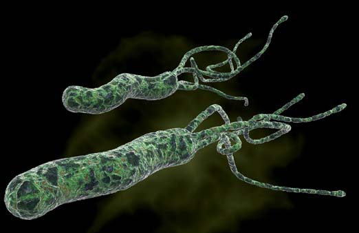
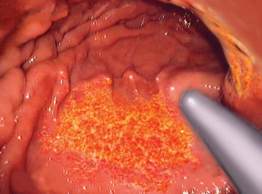
Bacterias y arqueas 533
han pasado por un mal proceso de enlatado. El botulismo es causado por una exotoxina liberada por el Clostridium botulinum , gram-positivo que forma endosporas. Durante el proceso de enlatado, el alimento debe calentarse lo sufi ciente para matar cualquier endospora altamente resistente al calor que pueda estar presente. Si no es así, las endosporas pueden germinar. La población bacterial resultante crece y libera una exotoxina tan poderosa ¡que 1 g podría matar a un millón de humanos!
gan desde la célula o escurren cuando la pared bacterial se destruye. La toxina, no la presencia de la bacteria, es la responsable de la enfermedad. La dift eria es causada por un bacilo gram-positivo ( Corynebacterium diph teriae ) que produce toxina sólo cuando un fago la lisogeniza. La toxina de la dift eria mata células y causa infl amación. El botulismo, un tipo de intoxicación alimenticia que puede conducir a parálisis y en ocasiones la muerte, resulta de comer alimentos que
Importantes enfermedades bacteriales y sus agentes causales
Enfermedad Patógeno Epidemiología/comentarios
Ántrax Bacillus anthracis La mayoría ocurre comúnmente en animales domésticos como ganado. Puede transmitirse a los humanos por animales infectados o productos animales. Las endosporas pueden vivir en el suelo durante muchos años. El ántrax no se difunde de persona a persona. La infección puede ocurrir en tres formas: cutánea, por inhalación y gastrointestinal.
Botulismo Clostridium botulinum Se contrae al comer alimentos que contengan la endotoxina o por heridas infectadas. El botulismo infantil se produce al ingerir endosporas. Provoca parálisis muscular y puede causar la muerte por fallo respiratorio.
Clamidia Chlamydia trachomatis Una de las enfermedades de transmisión sexual más frecuentemente reportadas en Estados Unidos. Alrededor de 75% de las mujeres infectadas y 50% de los hombres infectados no tienen síntomas. Si no se trata, la infección se extiende y daña los órganos reproductores; puede conducir a infertilidad. Este patógeno también puede infectar los ojos y genera millones de casos de ceguera a nivel mundial cada año.
Cólera Vibrio cholerae Se contrae al comer alimentos o beber agua contaminada con la bacteria. Común en áreas con tratamiento inadecuado de aguas negras y agua impura. Infecta el intestino y puede causar diarrea severa. La rápida pérdida de fl uidos puede conducir a deshidratación y a la muerte.
Difteria Corynebacterium Se transmite de persona a persona mediante contacto respiratorio o físico íntimo. Endémica en los diphtheriae países en desarrollo. No es común en EUA, pues la vacuna está disponible desde la década de 1920. Infecta el músculo cardiaco y las vías respiratorias.
Tifus epidémico Rickettsia prowazekii Se transmite por piojos corporales infectados. Después de un período de incubación de 8 a 12 días, los síntomas incluyen fi ebre, dolor de cabeza severo, dolores musculares y escalofríos. Varios días después aparece un sarpullido. Alrededor de 40% de los pacientes no tratados muere.
Gonorrea Neisseria gonorrhoeae Enfermedad de transmisión sexual común.
Enfermedad de Mycobacterium leprae Se cree que se difunde de persona a persona en secreciones nasales. A nivel mundial, esta enfermedad ha Hansen (lepra) incapacitado hasta a 2 millones de personas. Usualmente afecta la piel, nervios y membranas mucosas.
Enfermedad de Lyme Borrelia burgdorferi Se transmite a los humanos por la mordedura de garrapatas infectadas. Los síntomas incluyen sarpullido, dolor de cabeza, fi ebre y fatiga. Si no se trata, la infección puede extenderse a articulaciones, corazón y sistema nervioso.
Úlcera gástrica Helicobacter pylori Causa úlcera gástrica, una lesión en el recubrimiento del estómago o duodeno (parte superior del intestino delgado).
Tos ferina Bordetella pertussis Altamente transmisible de persona a persona. Causa espasmos de tos severa. Hay vacuna disponible.
Peste Yersinia pestis Se transmite de roedores, ardillas y gatos silvestres a personas mediante pulgas infectadas. Si no se trata, puede causar la muerte. Mató a millones de personas en Europa durante la Edad Media.
Neumonía Streptococcus Se transmite de persona a persona. Las cepas de S. pneumoniae son resistentes a uno o más antibióticos pneumoniae comúnmente usados para tratar esta infección. La incidencia disminuyó desde la introducción de una vacuna.
Salmonella Salmonella sp. Se transmite a las personas en pollo, huevos u otros alimentos contaminados. También se transmite (salmonelosis) por las heces de animales infectados; por ejemplo, lagartijas, tortugas, pollos, aves, e incluso perros y gatos. Los síntomas incluyen fi ebre, diarrea y dolor estomacal.
Tétanos Clostridium tetani Las bacterias entran en el cuerpo a través de una herida en la piel. Afecta el sistema nervioso; causa mandíbula trabada, rigidez del cuello, difi cultad para tragar, fi ebre y espasmos musculares. Hay vacuna disponible.
Diarrea del viajero Escherichia coli es Se ingiere en alimentos y agua contaminados. De 30% a 50% de los viajeros a áreas de alto riesgo la causa más común (América Central y del Sur, África, Medio Oriente y la mayor parte de Asia) desarrollan diarrea del viajero. La bacteria infecciosa produce toxinas en el tracto gastrointestinal.
Sífi lis Treponema pallidum Enfermedad de transmisión sexual que se contagia mediante contacto directo con una llaga de sífi lis. Si no se trata, con el pasar del tiempo daña el cerebro, hígado, huesos y bazo, y puede causar la muerte.
Tuberculosis Mycobacterium Se transmite de persona a persona mediante la inhalación de aire que contiene el patógeno. Los sínto tuberculosis mas incluyen fatiga, tos, fi ebre, pérdida de peso. No es común en EUA. Sin embargo, la forma resistente a múltiples medicamentos es una amenaza creciente.
Fiebre tifoidea Salmonella typhi Se transmite de persona a persona, en alimentos o agua contaminados con heces. El riesgo es más grande para los viajeros en los países en desarrollo, pero hay disponible una vacuna. Los síntomas incluyen fi ebre alta, dolor de cabeza y pérdida de apetito. Puede causar la muerte si no se trata.
TABLA 25-5
534 Capítulo 25
mente resistentes a un antibiótico particular. Las bacterias que no son resistentes mueren por el antibiótico, esto permite que las supervivientes se multipliquen y produzcan una población resistente. Observe que éste es un ejemplo común actual de selección natural. Otro tipo de resistencia al medicamento explica por qué algunas infecciones; por ejemplo, las infecciones del tracto urinario, son difíciles de curar. Cuando la E. coli infecta la vejiga, el sistema inmunológico lanza una poderosa defensa. Las bacterias contraatacan con la formación de biopelículas (se estudiaron anteriormente en este capítulo). Cada biopelícula está rodeada por una matriz rica en polisacáridos y por una concha protectora. Las bacterias en la biopelícula son resistentes a los antibióticos, así como a las defensas del huésped. Se estima que las bacterias que crecen en una biopelícula son hasta 1000 veces más resistentes a los antibióticos que el mismo tipo de bacterias que no forman una biopelícula. Dentro de las biopelículas, la expresión genética diferencial y la mutación conducen a diversas colonias bacteriales. La estrategia de biopelícula también explica algunos otros tipos de infecciones crónicas o recurrentes. Un alto porcentaje de infecciones adquiridas en hospitales involucra biopelículas.
Repaso
■ ¿Qué papeles importantes desempeñan los procariontes en los ecosistemas?
■ ¿Por qué es esencial cada uno de los postulados de Koch?
Como muchas exotoxinas, la que causa botulismo se inactiva mediante calentamiento. (El alimento debe calentarse a 80°C durante 10 minutos, o hervirse durante 3 a 4 minutos). La exotoxina del botulismo, comercializada con el nombre comercial Botox, se usa en cantidades extremadamente pequeñas para tratar severas condiciones médicas que involucran espasmos (contracciones musculares involuntarias). Dado que el Botox es una neurotoxina que funciona mediante la paralización de los músculos, también puede relajar las arrugas faciales causadas por la contracción de los músculos subyacentes. Sin embargo, sus efectos duran sólo de tres a ocho meses. Las endotoxinas no las segregan los patógenos, son componentes de las paredes celulares de la mayoría de las bacterias gram-negativas. Estos compuestos afectan al huésped sólo cuando se liberan de bacterias muertas. Las endotoxinas se enlazan a los macrófagos del huésped (grandes células fagocíticas del sistema inmunológico) y las estimulan a liberar sustancias que causan fi ebre y otros síntomas de infección. A diferencia de las exotoxinas, que causan síntomas específi cos, las endotoxinas parecen afectar a todo el cuerpo. Las endotoxinas no se destruyen mediante calentamiento.
La resistencia a los antibióticos es un gran problema de salud pública
Las bacterias mutan frecuentemente y se reproducen con rapidez. Muchos antibióticos se dirigen a la síntesis de proteínas en las bacterias. Por ejemplo, la estreptomicina y los antibióticos relacionados bloquean el inicio de la síntesis de proteínas. Las tetraciclinas bloquean el enlace del aminoacil ARNt con el sitio A en el ribosoma. La resistencia a los medicamentos puede resultar de una acumulación de mutaciones en el ADN plásmido o cromosómico. Los plásmidos que tienen genes para la resistencia a los antibióticos se llaman factores R . Tienen genes para la resistencia a un medicamento específi co y para transferir la resistencia a otras bacterias. Algunos factores R tienen varios genes para tener resistencia a los medicamentos y cada resistencia codifi ca para un medicamento diferente. El Staphylococcus aureus (SA) resistente a la meticilina, conocido como MRSA , y el Staphylococcus aureus resistente a la vancomicina, o VRSA , se han vinculado directamente con la transferencia horizontal de genes de resistencia a los antibióticos por parte de plásmidos durante la conjugación. Se estima que 1 de cada 100 personas sanas en Estados Unidos ahora portan MRSA ( FIGURA 25-14 ). Esta “superbacteria” puede causar infección en individuos con sistemas inmunológicos comprometidos. Los Centros para el Control de Enfermedades estiman que el MRSA causa más de 90,000 infecciones severas cada año, lo que resulta en más de 17,000 muertes anuales. El uso excesivo de antibióticos es el principal factor contribuyente a la resistencia de los medicamentos. Es probable que en cualquier población bacterial existan al menos algunas bacterias que son genética-
1 μ m
Janice Haney Carr/CDC
FIGURA 25-14 Micrografía MEB coloreada de Staphylococcus aureus resistente a la meticilina (MRSA). Estas bacterias también muestran resistencia creciente a la vancomicina.
25.1 (página 518)
1 Describir la estructura y formas comunes de las células procariotas.
■ Las células procariotas son muy pequeñas y no tienen organelos encerrados en membranas, como núcleos y mitocondrias.
■ Las células procariotas tienen muchas formas comunes: esférica ( cocos ), bastón ( bacilos ) y espiral. Las bacterias espirales incluyen el espirilo , que es una hélice rígida, y la espiroqueta , que es una hélice fl exible.
2 Contrastar la pared celular bacterial en bacterias grampositivas y gramnegativas.
■ La mayoría de las bacterias tienen paredes celulares compuestas de peptidoglicano . Las paredes de las bacterias grampositivas son muy gruesas y consisten principalmente de peptidoglicano. Las paredes celulares de las bacterias gramnegativas consisten de una delgada capa de peptidoglicano y una membrana exterior que recuerda a la membrana plasmática. Algunas especies de bacterias producen una cápsula o capa mucilaginosa que rodea la pared celular.
■ ■ RESUMEN: ENFOQUE EN LOS OBJETIVOS DE APRENDIZAJE
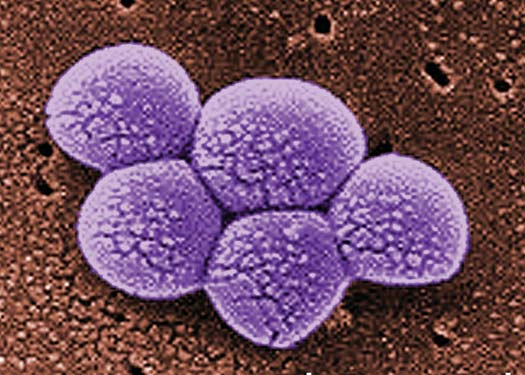
Bacterias y arqueas 535
anaerobios obligados que pueden realizar metabolismo sólo de manera anaerobia.
■ Algunas bacterias realizan fi jación de nitrógeno ; esto es, reducen el nitrógeno en la atmósfera a amoniaco. Otras bacterias convierten el amoniaco en nitritos o nitratos, un proceso llamado nitrifi cación .
25.4 (página 525)
7 Comparar las características de los tres dominios: Archaea, Bacteria y Eukarya.
■ Los procariotas se asignan a los dominios Archaea y Bacteria .
■ A diferencia de las bacterias, las paredes celulares de las arqueas no tienen peptidoglicano. Los mecanismos de traducción de los eucariotas se parecen más a los de las arqueas que a los de las bacterias. 8 Distinguir entre los dos grupos principales de arqueas e identifi car los tipos específi cos de arqueas que pertenecen a cada grupo.
■ Las crenarqueotas consisten principalmente de termófi las extremas , arqueas que pueden habitar ambientes muy calientes, en ocasiones ácidos. Las euriarqueotas incluyen metanógenas, halófi las extremas y algunas termófi las extremas. Las metanógenas son anaerobias obligadas que producen gas metano a partir de compuestos de carbono simples. Las halófi las extremas habitan soluciones salinas saturadas. 9 Describir los principales grupos de bacterias estudiados en este capítulo.
■ Los principales grupos de bacterias incluyen proteobacterias (gramnegativas), cianobacterias (gramnegativas), bacterias grampositivas, clamidias (gramnegativas) y espiroquetas (gramnegativas) (vea la tabla 25-4).
25.5 (página 530)
10 Identifi car los papeles ecológicos cruciales que tienen los procariotas.
■ Muchas bacterias son simbióticas con otros organismos. El mutualismo es una relación simbiótica en la que ambos participantes se benefi cian. En el comensalismo un participante se benefi cia y el otro ni se daña ni se benefi cia. En el parasitismo el parásito se benefi cia y el huésped se daña. Los patógenos bacterianos causan enfermedades, pero usualmente no se consideran parásitos obligados. Muchas bacterias forman biopelículas , densas comunidades de bacterias y otros microorganismos.
■ Los procariotas desempeñan importantes papeles ecológicos como desintegradores y son importantes en el reciclaje de nitrógeno y otros nutrientes. Algunos procariotas realizan fotosíntesis. 11 Describir algunos de los papeles importantes que desempeñan los procariotas en el comercio y la tecnología.
■ Algunas bacterias producen antibióticos. Se ha desarrollado la tecnología para usar ciertas bacterias para producir vacunas, insulina y otros importantes compuestos. Las bacterias se usan en la producción de muchos alimentos, incluidos queso, yogur, vinagre y chocolate. También se usan microbios en el tratamiento de aguas negras y la biorremediación.
25.6 (página 532)
12 Describir la importancia que tuvieron Louis Pasteur y Robert Koch para comprender las enfermedades infecciosas; citar los postulados de Koch.
■ Louis Pasteur demostró que la esterilización evita el crecimiento bacterial. Los postulados de Koch son un conjunto de lineamientos desarrollados por Robert Koch para demostrar que un patógeno específi co causa síntomas de enfermedad específi cos: (1) el patógeno debe estar presente en cada individuo con la enfermedad, (2) una muestra del microorganismo tomada del huésped enfermo puede crecer en un cultivo puro, (3) una muestra del cultivo puro causa la misma enfermedad cuando se inyecta en un huésped sano y (4) el microorganismo puede recuperarse del huésped infectado experimentalmente. 13 Identifi car las adaptaciones que han contribuido al éxito de los patógenos.
■ Algunas bacterias patógenas liberan fuertes venenos llamados exotoxinas ; otros producen endotoxinas , componentes venenosos de sus paredes celulares que se liberan cuando la bacteria muere. Muchas bacterias se han vuelto resistentes a los antibióticos. Los plásmidos que tienen genes para la resistencia a los antibióticos se llaman factores R . Consulte la tabla 25-5 para una descripción de algunas bacterias patógenas.
■ Algunos procariotas tienen apéndices con forma de cabello llamados fi mbrias. Desde la superfi cie de algunos procariotas también se extienden pelos . Tanto fi mbrias como pelos ayudan a las células a fi jarse entre sí o a otras superfi cies, incluidas las células que infectan. 3 Describir el movimiento en procariotas y describir la estructura del fl agelo bacterial.
■ Los fl agelos bacteriales son estructuralmente diferentes de los fl agelos eucariotas; cada fl agelo consiste de un cuerpo basal, gancho y fi lamento. Producen un movimiento giratorio.
Aprenda más acerca de la estructura de los procariotas y sus células al hacer clic sobre las fi guras en CengageNOW.
25.2 (página 521)
4 Describir la reproducción asexual en procariotas y resumir tres mecanismos (transformación, transducción y conjugación) que pueden conducir a recombinación genética.
■ El material genético de una bacteria usualmente consiste de una molécula circular de ADN y uno o más plásmidos , fragmentos circulares más pequeños de ADN.
■ Los procariotas se reproducen asexualmente mediante fi sión binaria (la célula se divide y forma dos células), gemación (se forma un brote y se separa de la célula progenitora) o fragmentación (dentro de la célula se forman paredes que luego se separan en varias células).
■ En las bacterias, el material genético puede intercambiarse mediante transformación, transducción o conjugación. En la transformación , una célula bacterial toma fragmentos de ADN liberados por otra célula. En la transducción , un fago lleva ADN bacterial de una célula bacterial a otra. En la conjugación , una bacteria donadora transfi ere ADN plásmido hacia una bacteria receptora.
Observe la conjugación al hacer clic sobre la fi gura en CengageNOW.
5 Enunciar factores específi cos que contribuyan a la rápida evolución de las bacterias.
■ La reproducción rápida garantiza que las mutaciones se transmitan rápidamente hacia las nuevas generaciones. La transferencia genética horizontal (mediante transformación, transducción y conjugación) contribuye a la rápida evolución de las bacterias.
25.3 (página 524)
6 Describir las formas principales por las cuales los procariotas llevan a cabo la nutrición y la captura de energía, y comparar sus requerimientos de oxígeno.
■ La mayoría de los procariotas son heterótrofos que obtienen carbono de otros organismos; algunos son autótrofos que elaboran sus propias moléculas orgánicas a partir de materias primas simples.
■ Los quimiótrofos obtienen energía a partir de compuestos químicos; los fotótrofos capturan energía de la luz.
■ Los autótrofos pueden ser fotoautótrofos , que obtienen energía de la luz solar, o quimioautótrofos , que obtienen energía al oxidar químicos inorgánicos como el amoniaco.
■ Los fotoheterótrofos obtienen carbono de otros organismos, pero usan clorofi la y otros pigmentos fotosintéticos para capturar energía de la luz solar. La mayoría de las bacterias son quimioheterótrofas . Principalmente son desintegradores de vida libre que obtienen tanto carbono como energía de la materia orgánica muerta.
■ La mayoría de las bacterias son aerobias ; esto es, requieren oxígeno para la respiración celular. Algunos procariotas son anaerobios facultativos que metabolizan de manera anaerobia cuando es necesario; otros son
536 Capítulo 25
El peptidoglicano es un compuesto químico que se encuentra en las paredes celulares de (a) la mayoría de los viroides (b) la mayoría de las arqueas (c) todos los procariotas (d) la mayoría de las bacterias (e) la mayoría de los eucariotas
Los fl agelos bacteriales (a) son homólogos de los fl agelos eucariotas (b) presentan un movimiento giratorio (c) consisten de un cuerpo basal y nueve pares de microtúbulos (d) son importantes en la transducción (e) son característicos de las bacterias gram-positivas
Las endosporas (a) son formadas por algunos virus (b) son células extremadamente duraderas (c) son similares a las esporas reproductoras de hongos y plantas (d) causan fi ebre y otros síntomas en el huésped (e) son extremadamente vulnerables a la infección por fagos
En la conjugación (a) dos células bacteriales de diferentes tipos de apareamiento se juntan y el material genético se transfi ere de una a otra (b) una célula bacterial desarrolla una protuberancia que se agranda y a la larga se separa de la célula progenitora (c) una célula bacterial toma los fragmentos de ADN liberados por una célula rota (d) un fago lleva genes bacteriales de una célula bacterial a otra (e) en la célula se desarrollan paredes que luego se dividen en varias células nuevas
La mayoría de las bacterias heterótrofas son (a) quimioheterótrofos de vida libre (b) fotoautótrofos (c) quimioautótrofos (d) anaerobios facultativos (e) anaerobios obligados
Las bacterias autótrofas (a) no requieren oxígeno atmosférico para la respiración celular (b) deben obtener compuestos orgánicos de otros organismos (c) fabrican sus propias moléculas orgánicas a partir de materias primas simples (d) consiguen su nutrimento de organismos muertos (e) producen endosporas cuando los niveles de oxígeno son muy bajos para el crecimiento activo
Las bacterias que proliferan en heridas cortantes es probable que sean (a) quimioheterótrofas (b) fotoautótrofas (c) quimioautótrofas (d) endosporas (e) anaerobios obligados
¿Cuál de los siguientes no pertenece al dominio Archaea? (a) procariotas que producen metano a partir de dióxido de carbono e hidró-
geno (b) termófi las (c) halófi las (d) bacteriófagos (e) procariotas con paredes celulares que carecen de peptidoglicano
Las bacterias rhizobiales (a) se usan en la producción de yogur (b) producen antibióticos (c) producen úlceras gástricas (d) son los patógenos que causan sífi lis (e) forman relaciones mutualistas con las raíces de legumbres y fi jan nitrógeno
Robert Koch (a) propuso un conjunto de lineamientos para demostrar que un patógeno específi co causa síntomas de enfermedad específi cos (b) descubrió la Helicobacter (c) descubrió microorganismos a fi nales del siglo xvii (d) demostró la falsedad de la generación espontánea (e) demostró que las personas pueden estimularse para desarrollar inmunidad a la enfermedad
¿Cuál grupo de bacterias incluye a las bacterias anaerobias grampositivas que causan botulismo? (a) clostridios (b) actinomicetos (c) enterobacterias (d) espiroquetas (e) estreptococos
Coloque los nombres en el diagrama, use la fi gura 25-2 para comprobar sus respuestas.
EVALÚE SU COMPRENSIÓN
Imagine que usted descubre un nuevo microorganismo. Después de estudiarlo con cuidado, determina que debe clasifi carse en el dominio Archaea. ¿Qué características pudieron conducirlo a tomar esta decisión?
¿En qué forma sería afectada la vida sobre la Tierra si súbitamente se extinguieran todos los procariotas?
CIENCIA, TECNOLOGÍA Y SOCIEDAD. Los Centros para el Control de Enfermedades (CDC) consideran la resistencia a los antibióti-
cos como uno de los problemas de salud que ejercen más presión en el mundo. ¿Qué factores contribuyen a este problema?
- VÍNCULO CON LA EVOLUCIÓN. ¿En qué forma el uso de antibióticos impone presiones selectivas sobre las bacterias?
Preguntas adicionales están disponibles en CengageNOW en www.cengage.com/login.
PENSAMIENTO CRÍTICO
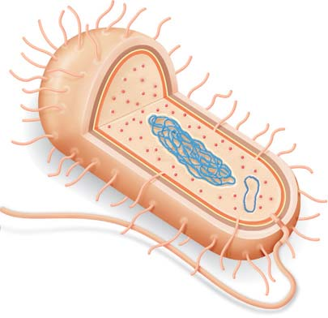